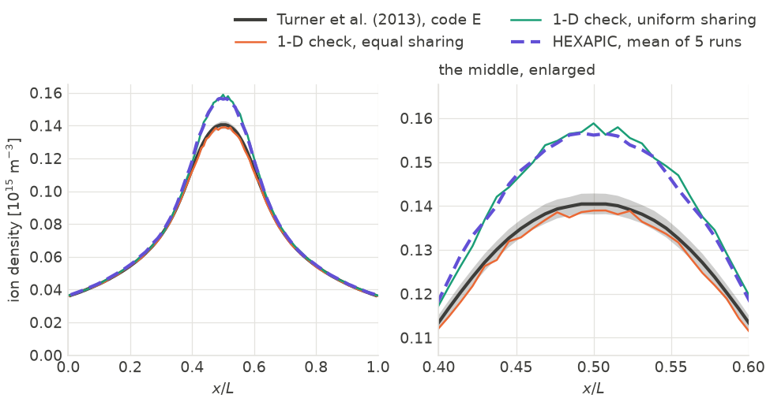

Capacitive discharge in helium (Turner benchmark)#
Helium between two parallel plates, one grounded and one driven at 13.56 MHz, forms a capacitively coupled discharge: the oscillating sheaths at the plates heat the electrons, the electrons ionise the gas, and the ions fall through the sheaths to the plates. Turner et al. [2013] define four such cases of increasing pressure, with every physical and numerical parameter prescribed, and show that five independent PIC-MCC codes give the same ion density profile to within their statistical noise. This example runs the benchmark with HEXAPIC. Case 1, the lowest pressure, is the main result; HEXAPIC does not reproduce it, and the cause is identified below.
Setup#
The numbers are those of the paper’s table I, case 1. case.py --case N
writes the other cases.
Domain |
67 mm × 4.19 mm; the plates at \(x = 0\) and \(x = L\), periodic in \(y\) |
Grid |
128 × 8 cells of \(L/128 = 0.523\) mm; the benchmark is 1-D along \(x\) |
Voltage |
\(450\sin(2\pi f t)\) V on the left plate, \(f = 13.56\) MHz; the right plate grounded |
Walls |
absorb electrons and ions; no secondary emission |
Gas |
helium, \(9.64\times10^{20}\ \mathrm{m^{-3}}\) at 300 K, a uniform background |
Collisions |
electrons: elastic, two excitations (19.82 and 20.61 eV), ionisation; He⁺: isotropic and backward scattering; the benchmark’s cross sections |
Start |
a uniform plasma of \(2.56\times10^{14}\ \mathrm{m^{-3}}\), electrons at 30 000 K, ions at 300 K |
Particles |
64 per cell in each species: the benchmark’s 512 per 1-D cell over the 8 rows; ion mass \(6.67\times10^{-27}\) kg |
Time step |
\(1/(400 f) = 1.84\times10^{-10}\) s, the same for the ions |
Run |
512 000 steps (1280 RF periods); profiles every 8 steps of the last 32 periods; no charge smoothing |
Field solver |
the direct solve of a strip |
Cost |
about 2 min on one NVIDIA A100; 2.2 GB of output |
Case |
Gas density [\(\mathrm{m^{-3}}\)] |
Voltage [V] |
Cells |
Steps |
Cost on one NVIDIA A100 |
|---|---|---|---|---|---|
1 |
\(9.64\times10^{20}\) |
450 |
128 |
512 000 |
about 2 min |
2 |
\(32.1\times10^{20}\) |
200 |
256 |
4 096 000 |
about 35 min, on a shared GPU |
3 |
\(96.4\times10^{20}\) |
150 |
512 |
8 192 000 |
about 1 to 1.5 h, estimated, not run |
4 |
\(321\times10^{20}\) |
120 |
512 |
49 152 000 |
about 4 to 8 h, estimated, not run |
Running#
python examples/discharges/ccp_helium/case.py runs/ccp_helium --run
python examples/discharges/ccp_helium/analyze.py runs/ccp_helium
case.py writes runs/ccp_helium/case.toml, copies the cross sections
beside it and, with --run, runs build/HEXAPIC on it (--hexapic names
another binary). HEXAPIC looks for the cross sections from the directory it
is started in, so --run starts it in the run’s directory. case.toml
beside the script is the same case: run it from this directory. --case N
selects the benchmark’s case, --seed N the seed, --periods N a shorter
run. analyze.py takes one run or several runs with different seeds, prints
the numbers and writes results.json and the figure into the run’s
directory. --live makes case.py write the frames that HEXAPIC / VIZ
shows during the run.
Deviations from the benchmark#
The energy of an ionisation. The benchmark gives the two electrons half of the remaining energy each. HEXAPIC gives the primary a uniformly drawn share, and has no switch for it. This changes the result, see below.
Two dimensions. The benchmark is 1-D. Here it is a strip of 8 cells with a 2-D field, with the benchmark’s number of particles per unit of \(x\). A run with the charge spread evenly over \(y\) (
[debug] field_1d) gives the same density within the scatter of the seeds.Particle shape. The benchmark’s codes weight linearly (CIC). The default build of HEXAPIC uses the quadratic shape (TSC). Both builds were run and agree, see the table below.
Cross sections. The tables are not from the paper’s supplement but from a public copy, checked against the paper’s figure 1 and table III. HEXAPIC resamples each table to 1024 points uniform in the logarithm of the energy. The references at the end of this page have the details. The built-in helium tables of HEXAPIC are not used: they differ from the benchmark’s by factors of 2 to more than 10 (the excitation).
Masses. The gas atom has HEXAPIC’s built-in helium mass, \(6.695\times10^{-27}\) kg, 0.4 % above the benchmark’s ion mass. The constants are CODATA 2018, not 2006.
The average. The profiles are averaged over every 8th step of the last 32 periods (1601 profiles), not over every step, and the densities are those of the cells: a node’s density is the mean of its two cells, and the two wall nodes are left out.
Results#
Ion density against the benchmark#
The benchmark’s result is the ion density \(n_i(x)\) averaged over the last 32 RF periods. The paper compares a code’s profile with the mean \(\bar n_i\) and the standard deviation \(\sigma_i\) of a long run of its code E by
summed over the nodes \(x_j\). For case 1, 95 % of the values of \(X^2\) of statistically equal runs lie between 55 and 303. Here \(\bar n_i\) and \(\sigma_i\) are read from the paper’s figure 7, on 127 of the 129 nodes.

The time-averaged ion density of case 1: the long run of code E of the paper with its standard deviation (band), HEXAPIC (the mean of 5 seeds, TSC build), and the 1-D check with the two ways of sharing the energy of an ionisation (the mean of 3 seeds each).
Case 1 |
\(n_i(L/2)\) [\(10^{15}\ \mathrm{m^{-3}}\)] |
against the paper |
\(X^2\) |
|---|---|---|---|
Paper, table III; long run of code E |
0.140; \(0.1405 \pm 0.0024\) |
55 to 303 |
|
HEXAPIC, TSC (default build), 5 seeds |
\(0.1561 \pm 0.0014\) |
+11.2 % |
\(1160 \pm 230\) |
HEXAPIC, CIC build, 5 seeds |
\(0.1555 \pm 0.0028\) |
+10.7 % |
\(970 \pm 450\) |
HEXAPIC, CIC, 1-D field, 1 seed |
0.1555 |
+10.7 % |
942 |
HEXAPIC, CIC, 8 times the particles, 1 seed |
0.1584 |
+12.8 % |
1100 |
1-D check, equal sharing, 3 seeds |
\(0.1390 \pm 0.0011\) |
−1.1 % |
81 to 186 |
1-D check, uniform sharing, 3 seeds |
\(0.1588 \pm 0.0019\) |
+13.1 % |
1100 to 1360 |
The uncertainties are the standard deviations over the seeds; \(\pm 0.0024\) is the paper’s standard deviation of a single run.
HEXAPIC’s density is 11 % above the benchmark in the middle of the gap, six standard deviations of a single run, and its \(X^2\) is far outside the accepted range. The paper’s codes agree with each other to better than 0.5 %. The difference does not depend on the particle shape, on the field being 2-D, or on the number of particles.
The cause is the sharing of the energy of an ionisation. A 1-D PIC-MCC
script written for this test
(reference/pic1d/pic1d.py) follows the
paper’s prescription. With the benchmark’s equal sharing it reproduces the
benchmark: its \(X^2\) is inside the accepted range for all three seeds. With
HEXAPIC’s uniformly drawn share, and nothing else changed, its density
rises by 14 % and lies on HEXAPIC’s profile. A uniform share produces more
slow electrons, which stay in the middle of the discharge and lower its
electron temperature, and with it the speed at which the ions leave.
HEXAPIC is 2 % below the 1-D check with uniform sharing, about two standard
errors; this remainder is not explained further.
At the higher pressure of case 2, one run (CIC build, one seed) gives \(0.847\times10^{15}\ \mathrm{m^{-3}}\) in the mid-plane against the paper’s \(0.828\times10^{15}\ \mathrm{m^{-3}}\) (\(\pm 0.005\) for a single run), a difference of +2.2 %. Its largest difference from the paper’s profile is 3.0 % of the mid-plane density. This is still outside the paper’s statistical bounds.
Other quantities of the paper#
The paper’s table III also gives the ion current density \(J_i\) at the electrodes, the power to the ions per unit area, \(S_i = \int \langle J_i E \rangle\,\mathrm{d}x\), and the electron temperature \(T_e\) in the mid-plane, all time averaged.
Case 1 |
HEXAPIC, TSC, 5 seeds |
Paper, table III |
|---|---|---|
\(J_i\) [\(\mathrm{A\,m^{-2}}\)] |
\(0.220 \pm 0.001\) |
0.219 |
\(S_i\) [\(\mathrm{W\,m^{-2}}\)] |
\(91.1 \pm 0.3\) |
90.6 |
\(T_e\) [eV] |
\(7.52 \pm 0.05\) |
9.36 |
The ion current and the power to the ions agree with the paper to 0.5 %: the ionisation rate of the discharge as a whole is the benchmark’s. The electron temperature in the middle is lower, which goes with the higher density there. The two temperatures are not defined in the same way: HEXAPIC’s is the mean of the cells’ temperatures, each taken about the cell’s mean velocity, and the paper does not state its definition. The definition accounts for an estimated 0.4 eV of the 1.8 eV (the energy of the RF drift and the few particles of a cell). The power to the electrons is not compared: the profiles hold the velocities half a time step from the field, which is not accurate enough for \(\langle J_e E \rangle\).
Files#
|
the case as a PICMI script, cases 1 to 4 |
|
case 1 as |
|
the density profile and the numbers above, from one or several runs |
|
the figure above, as |
|
the sources of the benchmark’s numbers and of the cross sections |
|
the paper’s ion densities and table III, the script that read them, and the cross sections |
|
the 1-D check and its densities |
The script#
case.py
#!/usr/bin/env python3
"""ccp_helium: a capacitive RF discharge in helium, the benchmark of Turner et al. (2013).
python case.py DIR # DIR/case.toml (case 1) and the cross sections beside it
python case.py DIR --run # and HEXAPIC on it (build/HEXAPIC; --hexapic: another), into DIR/output
python case.py DIR --case 2 # the benchmark's cases 1 to 4
python case.py # the case.toml beside this script (case 1)
Helium between two plates, the left one at V sin(2 pi f t), the right one grounded; y is periodic and 8 cells
wide (the benchmark is 1-D along x). The gas is a uniform background at 300 K; the walls absorb. The gap starts
full of a uniform plasma and is run for the benchmark's time; the profiles are averaged over its last 32 periods
(analyze.py). Every number below is from table I of the paper; the cross sections are the benchmark's
(reference/turner2013/cross_sections). HEXAPIC looks for them from the directory it is started in: --run starts
it in DIR. --periods N shortens the run (the average stays its last 32 periods), --seed N is the run's seed,
--live writes the frames HEXAPIC / VIZ shows during the run.
"""
import argparse
import os
import shutil
from pathlib import Path
from hexapic import picmi
ap = argparse.ArgumentParser(description="the helium RF discharge of Turner et al. (2013): case.toml")
ap.add_argument("dir", nargs="?", type=Path)
ap.add_argument("--case", type=int, choices=(1, 2, 3, 4), default=1)
ap.add_argument("--periods", type=int, help="RF periods to run (default: the benchmark's)")
ap.add_argument("--seed", type=int)
ap.add_argument("--live", action="store_true")
ap.add_argument("--run", action="store_true")
ap.add_argument("--hexapic", type=Path, help="the binary --run runs (default build/HEXAPIC)")
args = ap.parse_args()
HERE = Path(__file__).resolve().parent
# Table I of the paper, cases 1 to 4
L = 0.067 # the gap [m]
F = 13.56e6 # the frequency [Hz]
T_GAS = 300.0 # the gas temperature [K]
T_E, T_I = 30000.0, 300.0 # the temperatures at the start [K]
M_ION = 6.67e-27 # the ion's mass [kg]
N_GAS = (9.64e20, 32.1e20, 96.4e20, 321e20)[args.case - 1] # the gas density [m^-3]
VOLTAGE = (450.0, 200.0, 150.0, 120.0)[args.case - 1] # the voltage amplitude [V]
N0 = (2.56e14, 5.12e14, 5.12e14, 3.84e14)[args.case - 1] # the plasma density at the start [m^-3]
PER_CELL_1D = (512, 256, 128, 64)[args.case - 1] # particles per cell of the 1-D benchmark
NX = (128, 256, 512, 512)[args.case - 1] # cells across the gap
STEPS_PER_PERIOD = (400, 800, 1600, 3200)[args.case - 1]
PERIODS = (1280, 5120, 5120, 15360)[args.case - 1] # the simulation time in RF periods
AVERAGE = 32 # the average: the last periods
NY = 8 # cells across y: the smallest strip
SAMPLES_PER_PERIOD = 50 # outputs per period in the averaging window
CROSS_SECTIONS = "reference/turner2013/cross_sections"
c = picmi.constants
periods = args.periods or PERIODS
dx = L / NX
dt = 1.0 / (STEPS_PER_PERIOD * F)
steps = periods * STEPS_PER_PERIOD
every = STEPS_PER_PERIOD // SAMPLES_PER_PERIOD
kelvin = c.kb / c.q_e # eV per K
grid = picmi.Cartesian2DGrid(number_of_cells=[NX, NY], lower_bound=[0.0, 0.0], upper_bound=[L, NY * dx],
lower_boundary_conditions=["dirichlet", "periodic"],
upper_boundary_conditions=["dirichlet", "periodic"])
sim = picmi.Simulation(solver=picmi.ElectrostaticSolver(grid=grid), time_step_size=dt, max_steps=steps,
hexapic_run=None if args.seed is None else {"seed": args.seed},
hexapic_output={"phase_space": False, "from": steps - AVERAGE * STEPS_PER_PERIOD,
"x_profiles": True, "x_profile_average": "window", "wall_flux": True,
"energy_budget": True, "counts_every": STEPS_PER_PERIOD}
| ({"live": True} if args.live else {}),
hexapic_smoothing={"x_passes": 0, "y_passes": 0}, # the benchmark has none
hexapic_title="ccp_helium",
hexapic_description=f"A capacitive RF discharge in helium: case {args.case} of the benchmark "
"of Turner et al. (2013).")
sim.add_boundary(picmi.Boundary(type="biased", location="x_lo", name="driven", amplitude=VOLTAGE, frequency=F))
sim.add_boundary(picmi.Boundary(type="grounded", location="x_hi", name="grounded"))
# the benchmark's particles per 1-D cell, spread over the NY rows of the strip
layout = picmi.PseudoRandomLayout(n_macroparticles_per_cell=PER_CELL_1D // NY)
ions = picmi.Species(name="ions", mass=M_ION, charge=c.q_e,
initial_distribution=picmi.UniformDistribution(density=N0, hexapic_temperature_eV=T_I * kelvin))
electrons = picmi.Species(name="electrons", particle_type="electron",
initial_distribution=picmi.UniformDistribution(density=N0, hexapic_temperature_eV=T_E * kelvin))
sim.add_species(ions, layout)
sim.add_species(electrons, layout)
sim.add_interaction(picmi.MCCCollisions(gas="He", pressure=N_GAS * c.kb * T_GAS, temperature_eV=T_GAS * kelvin,
electron="electrons", ion="ions", data_dir=CROSS_SECTIONS,
lxcat_file=f"{CROSS_SECTIONS}/He_turner2013.txt"))
sim.add_diagnostic(picmi.FieldDiagnostic(grid=grid, period=every))
if args.run and args.dir is None:
ap.error("--run needs a directory for the run")
print(sim.write_input_file((args.dir or HERE) / "case.toml"))
if args.dir is not None:
shutil.copytree(HERE / CROSS_SECTIONS, args.dir / CROSS_SECTIONS, dirs_exist_ok=True)
if args.run:
hexapic = {} if args.hexapic is None else {"hexapic": args.hexapic.resolve()}
os.chdir(args.dir) # data_dir is looked up from the working directory
sim.run(**hexapic)
References#
The benchmark: Turner et al. [2013]. The paper was read as its open copy, arXiv:1211.5246 (the text and the figures as the authors’ source files). The table and figure numbers below are those of that copy. The paper’s electronic supplement (the cross-section tables and the result files) could not be fetched; nothing here is from it directly.
From the paper (turner2013/)#
The case (
../case.py): every physical and numerical parameter is from table I. The model (absorbing electrodes without emission, a uniform gas at 300 K, isotropic scattering, the energy of an ionisation shared equally, tables interpolated linearly, linear weighting, no subcycling) is from the paper’s sections II and III.table.csv: the ion density and the electron temperature in the mid-plane, the powers to the electrons and to the ions and the ion current density at the electrodes (table III), and the accepted ranges of the statistic \(X^2\) (table IV), copied by hand.ion_density_case<N>.csv: the time-averaged ion density of the five codes A to E, and the mean and the standard deviation of the long run of code E, read from the upper panels of figures 7 to 10. The figures are gnuplot PostScript files and hold the curves as lines between integer coordinates, about 3300 × 2400 of them across a plot: a value is exact to 0.05 % of the plot’s range. The long run’s points are marked on 128 of the nodes (cases 2 to 4: every second or fourth node). As a check of the reading, the statistic \(X^2\) of the five codes computed from these files is 231, 176, 309, 219 and 57 for case 1; the paper’s table IV has 240, 192, 328, 242 and 57 (one of the 129 nodes is not marked in the figure).
turner2013/extract.py wrote all of these but table.csv, on 2026-11-17:
curl -L -o src.tar.gz https://arxiv.org/e-print/1211.5246 && mkdir arxiv && tar -xzf src.tar.gz -C arxiv
git clone https://github.com/BLAST-WarpX/warpx-data # commit 3033347
python extract.py arxiv warpx-data/MCC_cross_sections/He
The cross sections (turner2013/cross_sections/): second hand#
The benchmark prescribes Biagi’s compilation, version 7.1, for the electrons
(elastic momentum transfer, two excitations, ionisation) and Phelps’s
isotropic and backward parts for He⁺ + He, as tables in the paper’s
supplement. The tables used here are not from the supplement but from
the warpx-data repository
(MCC_cross_sections/He, commit 3033347, licence CDLA-Permissive-2.0),
whose README.md names the same origins: Biagi’s MAGBOLTZ 7.1 for the four
electron processes and Phelps’s database for the two ion processes. They
are tabulated in steps of 0.01 eV up to 750 eV. Checks made against the
paper:
The six curves of the paper’s figure 1 agree with the tables to 0.1 % (the median of the ratio over each curve;
extract.pyprints it).The largest electron collision frequency of the tables gives \(\nu_e \Delta t = 0.0158\) for case 1, which is the paper’s table III.
The two ion tables follow Phelps’s expressions to \(5\times10^{-6}\), with the centre-of-mass energy \(\varepsilon\) in eV: \(\sigma_\mathrm{iso} = 7.63\times10^{-20}\,\varepsilon^{-1/2}\ \mathrm{m^2}\) and \(\sigma_\mathrm{back} = 10^{-19}\,(\varepsilon/1000)^{-0.15}(1 + \varepsilon/1000)^{-0.25}(1 + 5/\varepsilon)^{-0.15}\ \mathrm{m^2}\). Evaluated at \(10^4\) eV, the upper end of the paper’s figure 1, they give \(\nu_i \Delta t = 0.0069\) for case 1; the paper’s table III has 0.00688. The supplement’s ion tables therefore reach further than these (750 eV), which no ion of the benchmark does: the voltage is at most 450 V.
extract.py thins the tables: it drops rows as long as linear interpolation
between the remaining ones reproduces each dropped row to \(10^{-4}\) of its
value. The files:
He_turner2013.txt: the four electron processes in the LXCat download format, forlxcat_file. The energies lost are 19.82, 20.61 and 24.587 eV.i_He_elastic.dat,i_He_charge_exchange.dat: the isotropic and the backward part, under the file names HEXAPIC reads fromdata_dir.e_He_elastic.dat,e_He_excitation.dat,e_He_ionization.dat,e_He_double_ionization.dat: HEXAPIC reads these names fromdata_diras well. The run does not use them: the electron processes come from the LXCat file, and the last one (He⁺ → He²⁺, not a process of the benchmark) is zero.
The 1-D check (pic1d/)#
pic1d.py is a 1-D PIC-MCC code of 200 lines in numpy, written for this
example to measure what the energy sharing of an ionisation does to the
benchmark’s result (see the README). It follows the paper’s prescription
and reads the warpx-data tables in full. case1.csv holds the ion densities
of its runs of case 1 with the benchmark’s equal sharing and with a
uniformly drawn share, three seeds each, run on 2026-11-17 as
python pic1d.py warpx-data/MCC_cross_sections/He equal_seed1.csv --sharing equal --seed 1
The null-collision method: Vahedi and Surendra [1995].